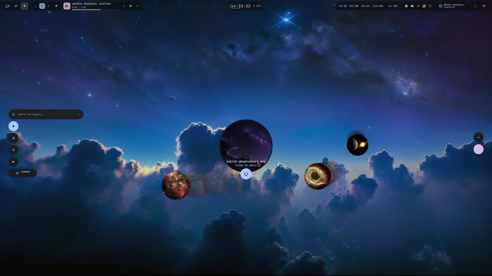

← THE INSTRUMENT DECK03 / 05
Parallax
Change your point of view.
An orbiting wallpaper library. Browse, preview, and apply a background when it feels right.

THE WALLPAPER ORBITBrowseKeep local images and the included collection together.
PreviewLook at an image before making it your background.
ChooseApply it to the display you want to change.
INSIDE PARALLAXA place for
Explore the source ↗A place for
the details.
An actual orbit
Explore your wallpaper collection in the signature orbital presentation.
Local and online
Bring your own images and search Wikimedia Commons through the online wallpaper helper.
Preview first
See a wallpaper at full size before choosing whether to apply it.
Output choice
Select a target display when working with more than one output; applied state follows the backend.
PUT IT TO WORK
Give your desktop a view.
Keep your images in the wallpaper directory, then open the library.
Get Tonantzintla ↗mkdir -p ~/Pictures/Wallpapers blackhole open walls